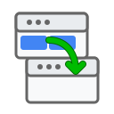

Workspace Tab Manager Options
Add Speed Dials Tabs to Preserve Emptied Workspaces
Ignore Speed Dial Tabs When Moving
Clean Up Duplicate Speed Dial Tabs
Undo/Redo Timeout Seconds
Focus Destination Window After Move
Enable Debug Logging
Documentation
menu_book
User Guide
settings
Configuration Guide
privacy_tip
Privacy Policy
bug_report
Report an Issue